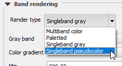

In the Style tab of the Layer properties dialog, change the Render type from singleband gray to Singleband pseudocolor.
singleband gray
Singleband pseudocolor

In the Generate new color map group, click Classify.
Click OK to apply the changes and close the Layer properties dialog.